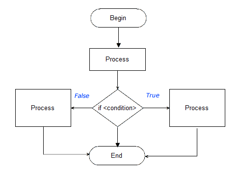

Ders 12
Ders 12
2.1.5 - Programların Mantıksal Yürüyüşü
Python programları tukarıdan aşağıya doğru gelişir. Eğer yö değiştirici bir bildirime rastlanmazsa, program düz bir hat üzerinden her program adımı sonlanınca, bir sonraki adım uygulanarak sonuna kadar devam eder. Programın yönünü değiştirecek bir bildirime rastlanınca, program yö değiştirir. Buna dallanma (branching) adı verilir.
Programın dallanması iki yöntemle gerçekleşir. Bunlardan ilki, eski BASIC ve FORTRAN programları gibi, her satıra bir numara vermek ve goto dbildirimleri ile programın yürüyüiünü bu satır numaralarına yönlendirmek şelinde olur. Buna kısaca goto yöntemi denilir. Bu yöntem, birçok sorunlar yaratır. Program gideceği yeri bulur. Fakat, programın gidiş yönünü sonradan olkumak pek kolay olmaz. Bu yüzden FORTRAN program paketleri sonradan çok zor, hatta belki de hiç yeniden organize edilemez.
Programın yürüyüş yönünün değiştirilebilmesinin ikinci yolu, mantıksal bildirimler yolu ile programa yeni yürüyüş yönlerinin bildirilmesidir. Birazdan inceleyeceğimiz if (eğer) bildirimi bu işlevi yapar. Bu yöntemde geri gitmek yoktur, sadece ileri adımların hangi yönden çalıştırılacağı programa bildirilir. Bu konuda bir akım şeması aşağıda görülmektedir.

Yukarıdaki programın yürüyüşü incelendiğinde, program başladıktan sonra düz hat üzerinde bazı program adımları çalıştırılyor. Sonra bir dallanma (if) bildirimi geliyor ve program bu bildirimin sonucu True ise bir yöndeki, False ise diğer yöndeki program adımlarını çalışrarak sona ulaşıyor. Dikkat edilirse, eğer dallanma sonucu bir tarafa yönlendirirse, programın diğer taraftaki program adımlarını görme olanağı bulunmuyor.
Programların salt mantıksal yöntemle yön değiştirmesi, modern program dillerinde olduğu gibi Python tarafından da uygulanan yöntemdir. Bu yöntemin kolay anlaşılabilir olması, onu programların sonradan düzeltilmesini kolaylaştıran bir araç haline getirmektedir. Salt mantıksal yön değiştirme yöntemini kullanan Python programlarının sonradan yeniden düzenlemesi, en azından olanaksız sayılmamaktadır.
2.1.6 - if, if-else Bildirimleri
Program yön değiştirmesi için kullanılan en basit olarak, if bildirimi uygulanır. Bu bildirim, bir bildirim bloğu açar ve bu bloğun içindeki program adımları, yukarıdan aşağıya doğru uygulanır, son program adımının uygulanması da tamamlanınca, program kontrolü, if bloğunun izleyen program adımına geçer.
Bir if bildiriminin yapısı aşağıda görülmektedir.
if <Mantıksal İfade> (veya bir olayın gerçekleşmesi) : program adımları (if bloğunun içinde)... program adımları (if bloğunun dışında)...
Görüldüğü gibi, Python programlama dilininde if bloğunun tanımı çok kolay ve sözdizimi çok açıktır. Örnekler,
if r > 45 : print('Yakıt yeterli !'); if a : print('Koşul Gerçekleşti !');
Eğer if bloğu içindeki program adımları henüz henüz hazır değilse, bunu sonraya bırakıp, if bloğunu pass geçebiliriz. Örnek:
if r > 45 : pass program adımları...
Bir if bildirimini bazen bir else bidirimi izleyebilir. Bunun anlamı, koşulun gerçekleşmesi ile çalıştırılacak program adımları if bloğu içinde, koşulun gerçekleşmemesi durumunda çalıştırılacak program adımları else bloğunda tutularak, bir tür genel program adımlarından soyutlanır. Buna, kapsülleme, (encapsulation) adı verilir. Örnek olarak,
# if bloğunun başlangıcı (Programın Mantıksal Yön değiştirmesi if <Mantıksal Sonuç>: (Mantıksal sonucun True olması durumunda çalıştırılacak program adımları)... else: (Mantıksal sonucun False olması durumunda çalıştırılacak program adımları)... # if bloğunun sonu program adımları...
Yukarıdaki programdaki yapılanmaya bakılınca, kapsüllemenin çok etkin olduğu ve programın bir aşamasında, belirli bir dallanma olayının tam olarak uygulanabilirliği görülebilir. Koşullu dallanma için gerekli mantıksal olayın gerçekleşmesi durumunda program bir yöne, gerçekleşmemesi durumında ise, bir başka yöne dallanır. Dallanma sonunda, program bir sonraki bildirimle çalışmaya devam eder.
Birden çok koşulun gerçekleşmesi ile programın yön değiştirme olanağı da sağlanmıştır. Bir koşul gerçekleşirse, program bir tarafa, başka bir koşul gerçekleşirse, program bir başka tarafa, hiçbiri gerçekleşmemişse, program belirli bir tarafa yön değiştirebilir. Üstelik bazen koşullardan birkaçı birden gerçekleşmişse, program her yöne sıra ile dallanır. Python programlama dilinde, JavaScript veya Java program dilleri gibi, switch bildirimi yoktur. Fakat, aşağıdaki program buna eşdeğer sonuç sağlar.
a = 12; b = 43; c = 76; if c == 22: print("{}".format("c uygun !")); else: print("{}".format("c uyumsuz !")); if b == 43: print("{}".format("b uygun !")); else: print("{0}".format("b uyumsuz !")); if a== 12: print("{}".format("a uygun !")); else: print("{0}".format("a uyumsuz !")); |
"""
Program Sonucu :
c uyumsuz !
b uygun !
a uygun !
""" |
Yukarıdaki program bir tarama (scanning) uygulamasıdır. Bu yöntemle bilgisayar tüm olasılıkları tarar ve içlerinden sonucu True olanların bloğona girer ve program adımlarını çalıştırır.
Bazen de ilk True sonucunu yakalayıp belirrtriği program adımlarını çalıştıran ve diğer olasılıkları gözardı eden programlara gerek duyulabilir. Bunlar içiçe if bildirimleri ile organize edilebilirler. Böyle bir örnek program aşağıda görülmektedir.
# Program : Ders12program2.py a = 12; b = 43; c = 76; if c == 22: print( {} .format( c uygun ! )); else: print( {} .format( c uyumsuz ! )); if b == 43: print( {} .format( b uygun ! )); else: print( {0} .format( b uyumsuz ! )); if a == 2: print( {} .format( a uygun ! )); else: print( {0} .format( a uyumsuz ! )); print("Program Sonu"); Program Sonucu : c uyumsuz ! b uygun ! Program Sonu
Bu tür bir yazılım, girintili sözdizimininden yaralanılarak kolayca izlenebilir. Fakat, fazla uzun seçenek sayısı ile çalışmak zorunda kalınınca, bu yazılımın okunması biraz zor olabilir. Bunun için, Python programlama dili, yeni ve kendine özgü bir saklı sözcük yaratarak, çok daha uygun bir yazılım sistemi sağlamıştır. Burada yeni bir saklı sözcük kullanılabilir. Bu yeni saklı sözcük, if ve else if saklı sözcüklerinin birleşimi olan elif saklı sözcüğüdür. Aşağıda bu programın elif sürümü görülmektedir.
# Program : Ders12program3.py a = 12; b = 43; c = 76; if c == 22: print( {} .format( c uygun ! )); elif b == 43: print( {} .format( c uygun değil! )); print( {} .format( b uygun ! )); elif a == 12: print( {} .format( c uygun değil! )); print( {} .format( b uygun değil! )); print( {} .format( a uygun! )); print( {} .format( Program Sonu! )); """ Program Sonucu : c uygun değil! b uygun ! program sonu ! """
Yukarıdaki programda görüldüğü gibi, bu son şeklin yazılımı çok basit ve açıktır. Yukarıda uygulaması görülen if/elif merdivenleri istendiği kadar uzun olabilir. Seçenek sırası dikkatle düzenlenmelidir, çünkü bir kez doğrulanan seçenek oldu mu, diğer seçenekler girilmeden seçme olayı tamamlanır. Doğrulanan seçenekten sonra da doğrular olsa bile onlara girilmeden program seçenek bloğunu terkeder. İstenirse, en son seçenek olarak else bloğu kullanılabilir.
Bazen mantıksal işlemcilerden yararlanılarak çoklu seçenekler daha aza indirgenebilir. Örnek olarak yukarıdaki programda, a == 12,b == 43, ve c == 12 olduğu zaman, seçeneğin doğrulanması istendiğinde,
if a == 12 and b == 43 and c == 76 :
şeklinde bir seçenek bloğu tanımlanabilir. Bu bir nokta veruşudur ve sadece belirtilen seçenekleri tümü de doğrulandığında kontrol, seçenek bloğu içine girebilir.
Mantıksal işlemcilerin de katkısı ile çok detaylı ve tam amacı belirten seçenek blokları organize edilebilir. Dikkat edilmesi gereken nokta, seçenekler karmaşık hale gelirse, oluşturulan seçenek bildiriminin sınanmasının çok vakit alabileceğidir. Bazen, uzun olmasına karşın, daha basit olan if/elif merdivenleri daha hızlı sonuç verebilir.